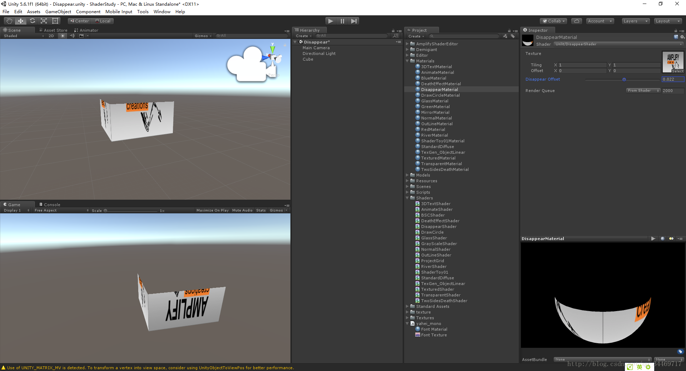

luvain
Hello everyone, I’m new to urho.
Could anyone pls help me with question about how to clipping a 3d object, I just want to do the same like here by urho.
Hello everyone, I’m new to urho.
Could anyone pls help me with question about how to clipping a 3d object, I just want to do the same like here by urho.

Hello, and welcome to the forum!
There have been a number of
CSG
-related threads that may be helpful.
https://discourse.urho3d.io/search?q=CSG
Thanks a lot, but is there any easy solution?
I just want let a model which assigned material disappear slowly from left to right.
…now I think a better approach could be material-based, like heXon used; discussion and shaders:
Thanks your quick answer, is there any more easy way?
In three.js just set a clipping plan for material is enough:sweat_smile:
I do some research on urho, it just can set the clipping plane in camera.
could we do it by set animation or mask ?
I’m new to urho3d, want to make a effect about box disappear from top to buttom slowly.
After do some research I find that need to implement it by custom shader. I known how to do it by Unity3d, like below, but have no idea in Urho3d’s shader. especially how to clip in the ps() method.
Pass
{
CGPROGRAM
#pragma
vertex vert
#pragma
fragment frag
#include "UnityCG.cginc"
struct appdata
{
float4 vertex : POSITION;
float2 uv : TEXCOORD0;
};
struct v2f
{
float3 uv : TEXCOORD0;
float4 vertex : SV_POSITION;
};
sampler2D _MainTex;
float4 _MainTex_ST;
float _DisappearOffset;
v2f vert (appdata v)
{
v2f o;
o.vertex = UnityObjectToClipPos(v.vertex);
o.uv.xy = TRANSFORM_TEX(v.uv, _MainTex);
o.uv.z = _DisappearOffset - v.vertex.y;
return o;
}
xed4 frag (v2f i) : SV_Target
{
clip(i.uv.z);
fixed4 col = tex2D(_MainTex, i.uv.xy);
return col;
}
ENDCG
}

Basically it’s GLSL/HLSL… Pages on Shaders, Rendering, etc. at
Related pages
go into detail.
Dunno if Modanung’s shader is worth a look for this…
*or maybe a graphics programming Q&A site …

1vanK created the dissolve shader, if that’s the shader you mean.
My first try for this would be to set alpha to 0 when y > 0 in the fragment shader.